-
Go to Google Cloud Console.
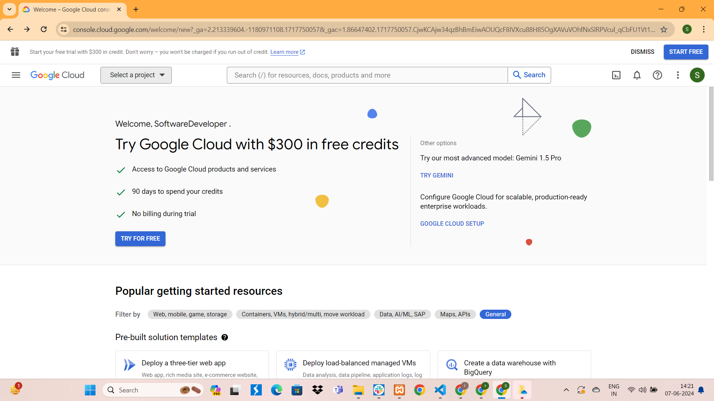
-
Create a new project or select an existing project..
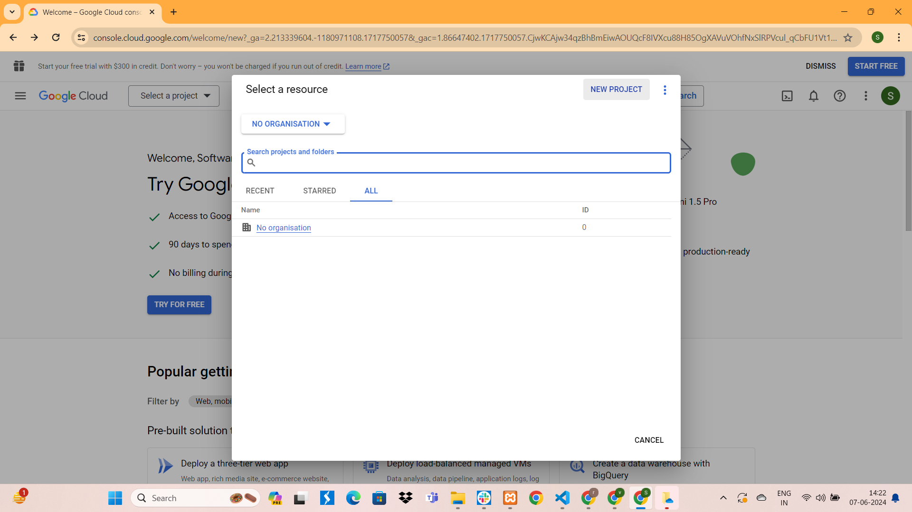
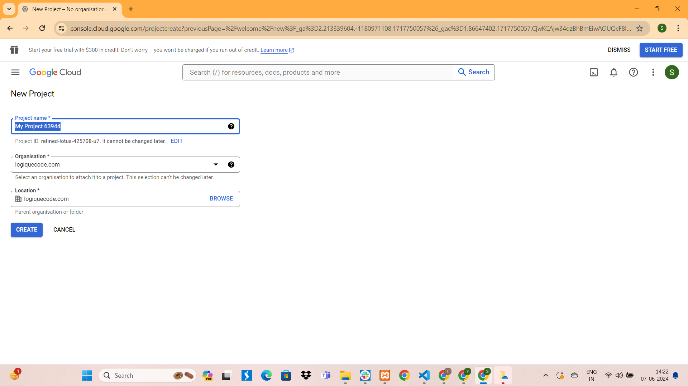
-
Enable the Google Drive API for your project:
I. Go to the API
Library.
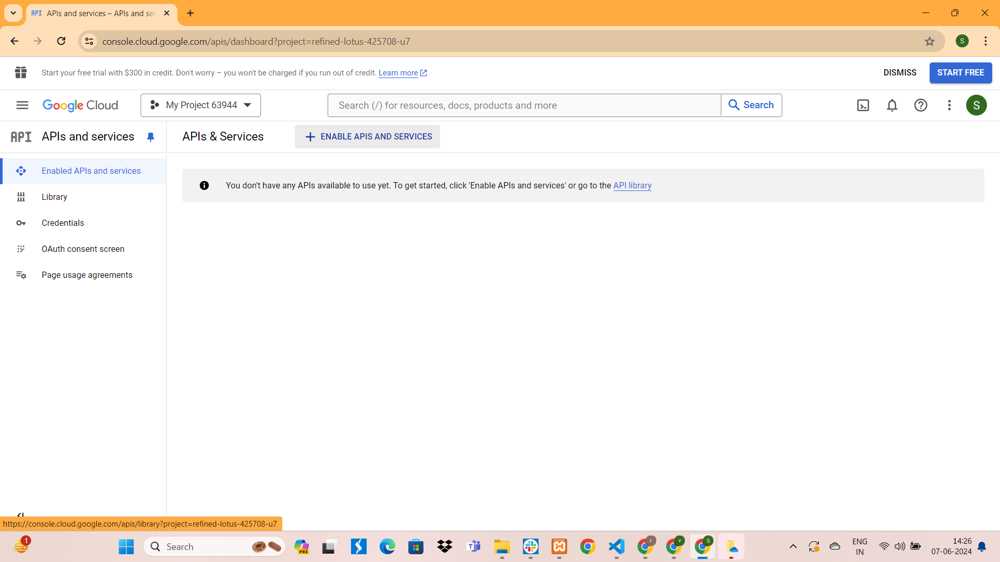
II. Search for "Google Drive API" and enable it.
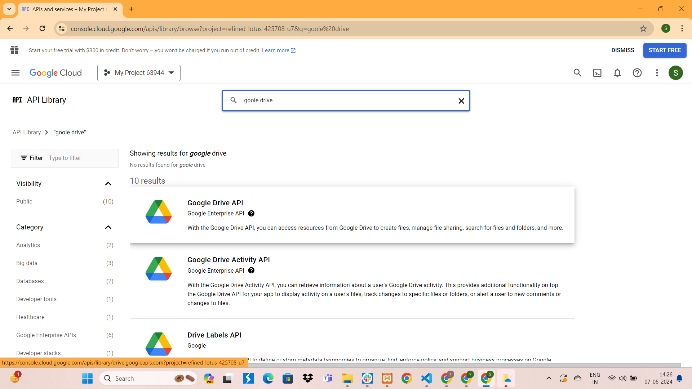
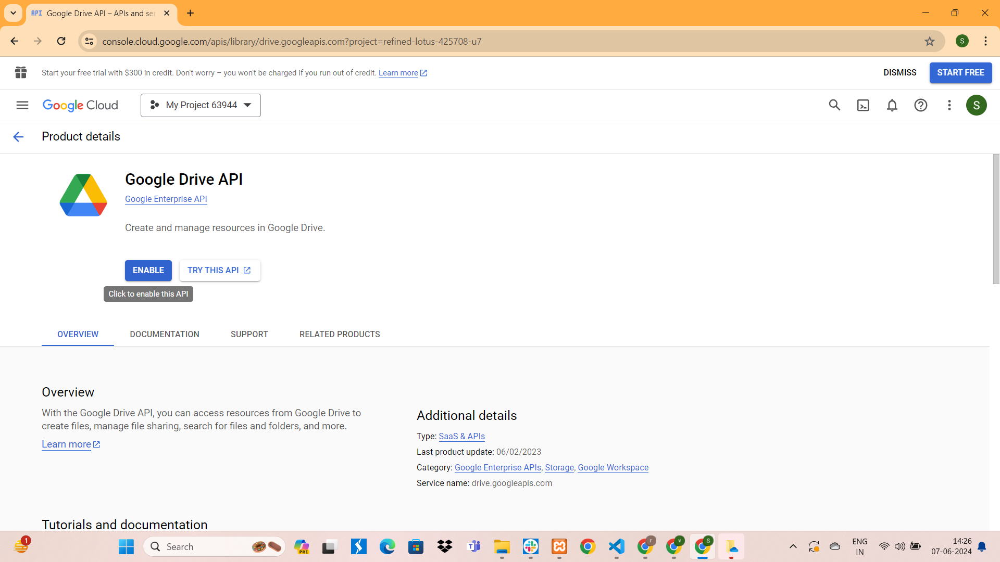
- Create a service account:
I. Go to IAM & Admin >Service Accounts.
II. Click "Create Service Account".
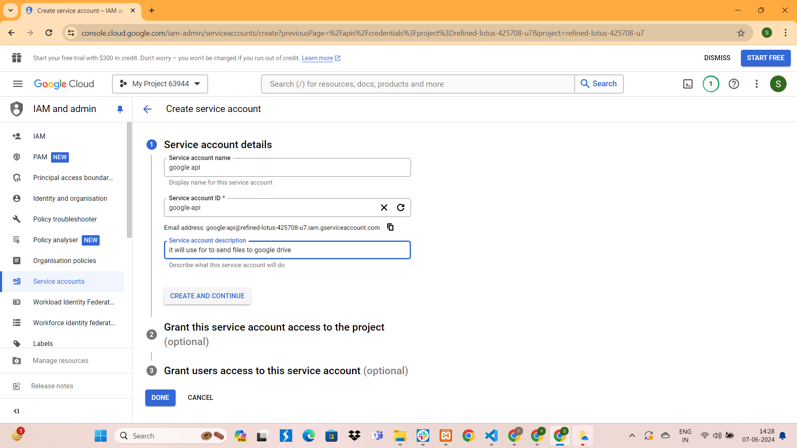
II. Fill in the necessary details and click "Create".
- After creating the service account, click "Select a role" and add roles like "Editor" or "Owner".
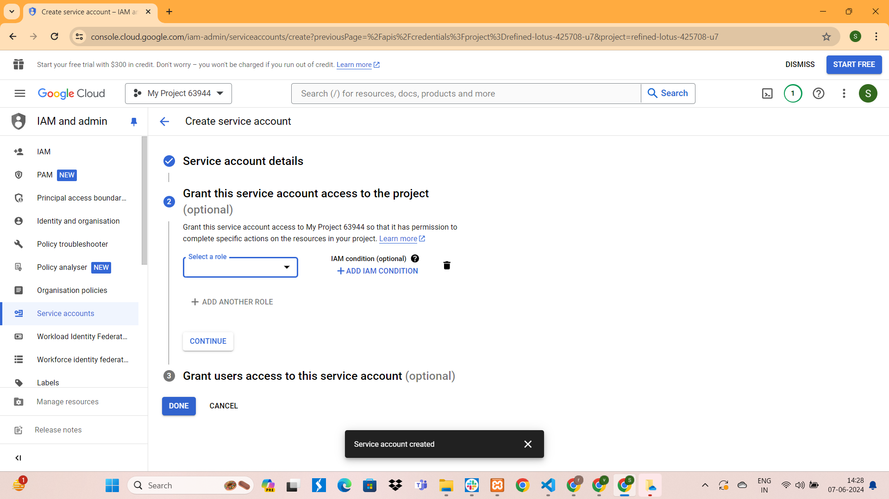
- Create a key for the service account:
I. Go to IAM & Admin > Credentials.
II. Click "Email" or Action > Manage Keys.
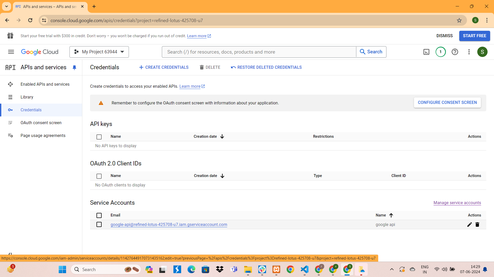
III. Click "Key" > "Add Key" > "Create new key".
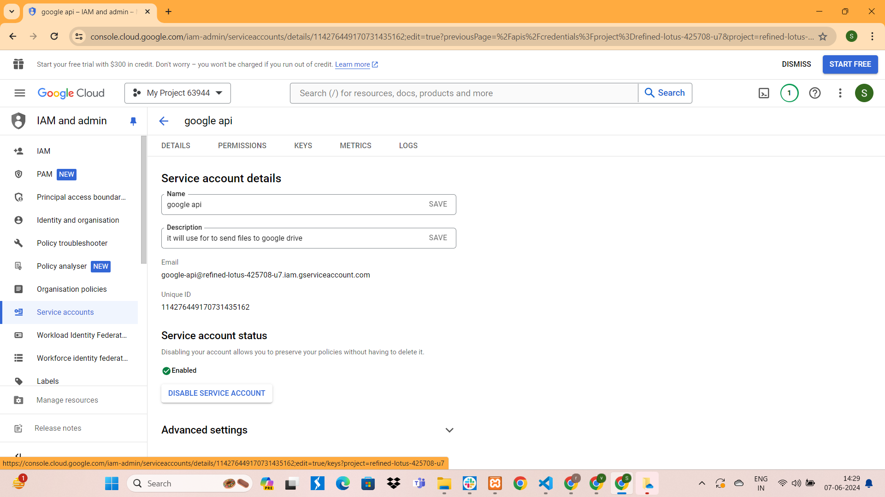
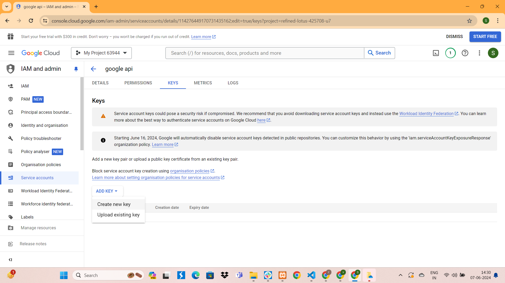
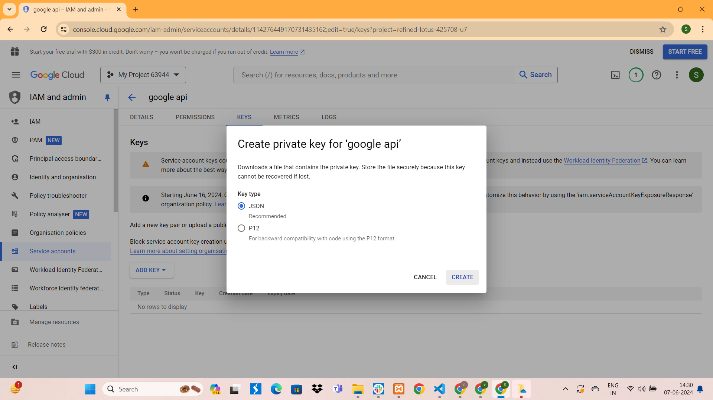
IV. Choose JSON as the key type and click "Create".
V. A JSON file will be downloaded to your computer. This is your service account key
file.
2. Set Up Google Drive Account
- Create a Folder in Google Drive
I. Go to Google Drive.
II. Click on "New" > "Folder".
III. Name your folder and click "Create".
- Click on Share the Folder with the Service Account.
I. Right-click on the newly created folder and select "Share".
II. In the "Share with people and groups" dialog, enter the email address of your
service account. This email address can be found in the JSON key file you downloaded from the Google
Cloud Console, typically in the format your-service-account@your-project.iam.gserviceaccount.com.
III. Set the access level to "Editor" to allow the service account to upload
files.
IV. Click "Send".
- Take Folder ID from URL.
I. https://drive.google.com/drive/folders/1jMu9SbjFRstscciOYGe4qdRUCh8n9uPj in this
URL 1jMu9SbjFRstscciOYGe4qdRUCh8n9uPj is folder id.